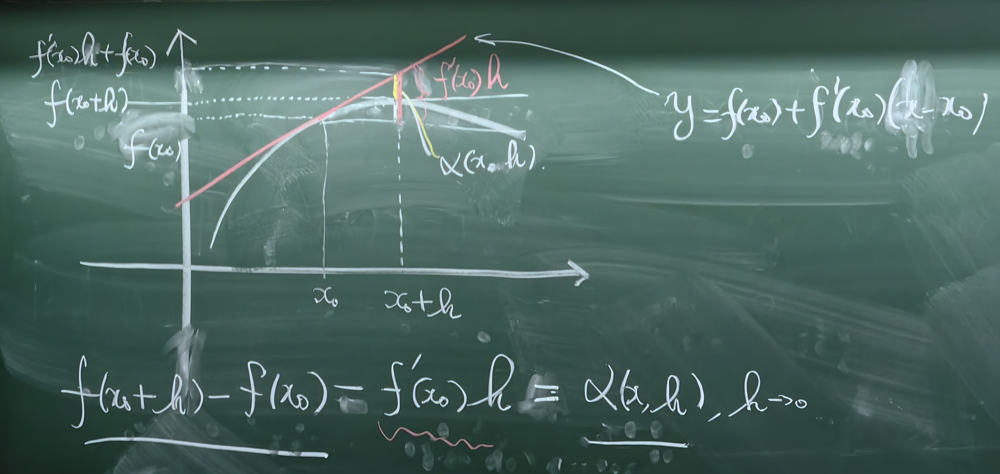
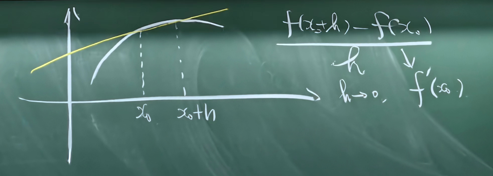
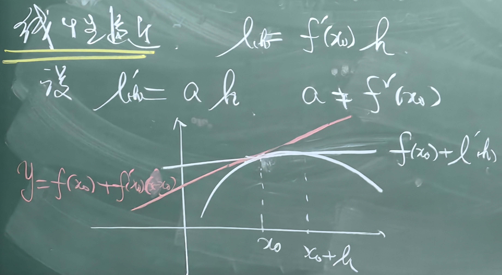

Chapter III. 函数的导数
Section III. 1. 导数的定义
导数和微分
Def. 设 f:X→R, x0 为 X 的极限点, 若 ∃A(x0), 使得
f(x0+h)−f(x0)=A(x0)h+α(x0,h),h→0(1)
其中 x0+h∈X, α(x0,h)=o(h), 则称 f(x) 在点 x=x0 是可微的.
其中 Δx=x+h−x=h 称为自变量的增量; Δf(x,h)=f(x+h)−f(x) 称为函数的增量.
Def. 称线性映射 R→R,h↦A(x0)h 为 f 在 x0 点的微分, 记作 df(x0). 从而
df(x0)(h)=A(x0)⋅h.
于是 (1) 也可以表示为
f(x0+h)−f(x0)=df(x0)(h)+α(x0,h),h→0.
Def. 由 (1) 可知
A(x0)=h→0limhf(x0+h)−f(h),
称 A(x0) 为 f 在 x0 处的导数, 记为 f′(x0).
特别地, 取 f(x)=x, 此时 A(x)=f′(x)=1, 于是
dx:R→R,h↦dx(h)=h.
对于一般的函数
f′(x)=dx(h)df(x)(h)由于与 h 无关, 故也写作dxdf(x).
称之为微商. 此时微分
df(x)=f′(x)dx.
Note. 在一元函数中导数和微商相同, 而高阶微分和多元函数中有区别.
Note. 实际上 df(x) 是从 Tx0R→Tf(x0)R 的映射. 由此可见, 微分的地位高于导数 (陈大广语).
微分的意义
若 f 在 x0 可微, 称 y=f(x0)+f′(x0)(x−x0) 为 f 在点 (x0,f(x0)) 处的切线, 其斜率为 f′(x0).



可微函数
Def. 设 f:X→R, 若 f 在 X 的每一点都可微 (可导), 则称 f 在 X 上可微. 此时记
C1(X)={f∣f 在 X 可微},
为 X 上可微函数的全体.
一些例子
Exm.
(1) f(x)=c,∀x∈R, 此时 f′(x0)=0.
(2) f(x)=xn, 此时
f′(x0)=h→0limh(x0+h)n−x0n=h→0limhnx0n−1h+o(h)=nx0n−1.
(3) f(x)=sinx,f(x)=cosx
h→0limhsin(x0+h)−sinx0=h→0limh2sin2hcos(x0+2h)=cosx0.
cos 的情况类似, 有 cos′(x0)=−sinx0.
(4) f(x)=ex
h→0limhex+h−ex=exh→0limheh−1=ex.
(5) f(x)=lnx
h→0limhln(x+h)−lnx=h→0limx1ln(1+xh)x/h=x1.
Exm. f(x)={x2sinx10x=0x=0, 则 f 在 x=0 可导:
x→0limxf(x)−f(0)=0
Exm. f(x)=∣x∣,∀x∈R.
x→0+limxf(x)−f(0)=x→0+limxx=1.x→0−limxf(x)−f(0)=x→0−limx−x=−1.
于是 f 在 x=0 不可导.
左右导数
Def. 设 f:X→R, x0 为 X 极限点. 此时若
h→x+limhf(x+h)−f(x)
存在, 则称 f 在 x 处右导数存在, 记作 f+′(x). 类似可定义左导数 f−′(x).
Rmk. f 在 x=x0 处可导当且仅当此时 f 左右导数均存在且相等.
Exm. 设 f:X→R 在 0 处可微且 f(0)=0. 记 yn=∑k=1nf(n2k), 则 limn→∞yn=21f′(0).
Pf. 我们有 f(x)=f(0)+f′(0)x+β(x)x, 其中 β(x)=o(1). 于是
f(n2k)=f′(0)n2k+β(n2k)n2k⟹yn=k=1∑nf(n2k)=21(1+n1)f′(0)+k=1∑nβ(n2k)n2k.
由于 β=o(1), 于是对 ∀ε>0, 当 n 充分大时
β(n2k)<β(n1)<ε.
此时
k=1∑nβ(n2k)<ε⋅2n2n(n+1)<ε,
于是 limn→∞yn=21f′(0).
Section III. 2. 导数的运算法则
导数的代数运算
Thm. 设 f:X→R 在 x0 点可导, 则 f 在 x0 点连续.
Pf.
x→x0lim(f(x)−f(x0))=x→x0lim(x−x0f(x)−f(x0))(x−x0)=0.□
Thm. 设 f,g:X→R 在 x0 点可导, 则
-
∀α,β∈R, αf+βg 在 x0 点可导且
(αf+βg)′(x0)=αf′(x0)+βg′(x0).
-
(fg)′(x0)=f′(x0)g(x0)+g′(x0)f(x0).
-
若 g′(x0)=0, 于是
(f/g)′(x0)=g2(x0)f′(x0)g(x0)−g′(x0)f(x0).
Thm (链式法则). 设 f:X→Y 在 x0 可导, g:Y→Z 在 y0=f(x0 可导, 则 g∘f 在 x0 可导且 (g∘f)′(x0)=g′(f(x0))f′(x0).
Pf. 我们有 g(y0+s)−g(y0)=g′(y0)s+o(s).
g(f(x0+h))−g(f(x0))=g′(y0)(f′(x0)h+o(h))+o(f′(x0)h+o(h))=g′(y0)f′(x0)h+o(h).□
Exm. 设 f(x)=∑k=0nakxk, 则 f′(x)=∑k=0nkakxk−1.
Exm. 设 f(x)=tanx, 则 f′(x)=cos2x1. 同理 cot′(x)=−sin2x1.
Exm. 记
sinhx=xex−e−x,coshx=2ex+e−x,tanhx=coshxsinhx.
此时 cosh2x−sinh2x=1. 则
sinh′x=coshx,cosh′x=sinhx,tanh′x=cosh2x1,coth′x=−sinh2x1.
Exm. 设 x>0,α∈R, 则 xα=eαlnx, 于是 (xα)′=xαeαlnx=αxα−1.
Exm. 设 f(x)=ln∣x∣, 则 f′(x)=x1.
Exm. 设 f(x) 在 x0 点可微且 f(x0)=0, 则 ln∣f(x)∣ 在 x0 点可微且 (ln∣f(x)∣)′=f(x0)f′(x0).
反函数求导法则
Thm (反函数的求导). 设 X,y⊆R, f:X→Y 在 x0 处可微且 f′(x0)=0. 其逆函数 g:Y→X 存在且在 y0=f(x0) 处连续, 则 g 在 y0 处可导且 g′(y0)=f′(x0)1
Pf. 由于 g 在 y0 连续, 于是 limy→y0g(y0)=g(y0). 由于 f 为双射, 当 y=y0 时, f(y)=f(y0), 于是根据复合函数的极限就有
y→y0limy−y0g(y)−g(y0)=y→y0limy−y0g(y)−g(y0)=y→y0limf(x)−f(x0)x−x0=y→y0limx−x0f(x)−f(x0)1=f′(x0)1.□
Exm. arcsin′x=cosy1=1−x21.
Exm. arccos′x=−siny1=−1−x21.
Exm. arctan′x=cos2y11=cos2y=1+tan2y1=x2+11.
Exm. arsinh′x=coshy1=1+x21.
Exm. arcosh′x=sinhy1=x2−11
.
Exm. artanh′x=cosh2y11=1−x21.
Section III. 3. 高阶导数
Def. 设 f:X→R 可微, 若 f′:X→R 仍可微, 称 f 二阶可微, 记作 f′′(x) 或 dx2d2f(x).
一般地, 可以定义 f 的 n 阶导数, 记作 f(n)(x) 或 dxndnf(x).
Def. 若 f 在 X 上 n 阶可微, 并且 f(n) 在 X 上连续, 称 f 在 X 上 n 阶连续可微. X 上的 n 阶连续可微函数的全体记作 Cn(X) 或 C(n)(X).
若 f 在 X 上无穷次可微, 称 f 为 X 上的光滑函数. X 上光滑函数的全体称为 C∞(X).
Exm. 光滑函数的例子: sinx,ex.
Thm (Leibniz). 设 f,g∈Cn(X), 则
(f⋅g)(n)(x)=k=0∑n(kn)f(k)(x)g(n−k)(x).
Pf. 归纳即可. □
Section III. 4. 微分中值定理
函数的极值
Def. 设 δ>0,f:U(x0,δ)→R.
-
若 ∀x∈U˚(x0,δ) 都有 f(x)≤f(x0) 则称 x0 为极大值点. 类似定义极小值点.
-
若 ∀x∈U˚(x0,δ) 都有 f(x)<f(x0) 则称 x0 为严格极大值点. 类似定义严格极小值点.
Exm. f(x)=∣x∣, 则 x=0 为极小值点.
Exm. f(x)=−x2, 则 x=0 为极大值点.
Thm (Fermat, 1638). 设 f 在 (a,b) 上可微, x0∈(a,b) 为极值点, 则 f′(x)=0.
Pf. 由定义, f′(x0)=limh→0hf(x0+h)−f(x0). 不妨设 x0 为极大值点, 于是存在 δ>0, 当 ∣h∣<δ 时 f(x0+h)≤f(x0), 于是
h→0+limhf(x0+h)−f(x0)≤0;h→0−limhf(x0+h)−f(x0)≥0,
可知 f′(x0)=0. □
Note. 导数为 0 不一定为极值点; 极值点不一定可微.
Def. 导数为 0 的点称为驻点. 将驻点和极值点合称可疑极值点.
中值定理
Thm (Rolle, 1690). 设 f∈C[a,b]∩D(a,b) 且 f(a)=f(b), 则 ∃ξ∈(a,b),s.t.f′(ξ)=0.
Pf. 如果 f(x)=c, 则显然正确. 否则如果 f(x) 不是常值函数, 此时 f 在 (a,b) 上某一点 ξ 取到最值, 根据 Fermat 定理此时 f′(ξ)=0, 得证. □
Thm (Lagrange, 1801). 设 f∈C[a,b]∩D(a,b), 则 ∃ξ∈(a,b),s.t.f′(ξ)=b−af(b)−f(a).
Pf. 构造
F(x)=f(x)−b−af(b)−f(a)(x−a),
则 F(x) 满足 Rolle 中值定理条件, 于是可推知命题成立. □
Cor.
-
若 f∈D(a,b) 且 f′(x)≥0,∀x∈(a,b), 则 f 单调递增.
-
若 f∈D(a,b),f′(x)=0,∀x∈(a,b), 则 f(x)=C.
-
若 f,g∈D(a,b) 满足 f′(x)=g′(x),∀x∈(a,b), 则 f(x)=g(x)+C.
Exm. 设 f∈D(a,b) 且 ∣f′(x)∣≤M, 则 f 在 (a,b) 上一致连续.
Pf. 根据 Lagrange 中值定理, ∀x<y∈(a,b), 存在 ξ∈(x,y), 使得 f(y)−f(x)=f′(ξ)(y−x), 于是
∣f(y)−f(x)∣≤M∣y−x∣,
这是所谓的 Lipschitz 条件, 于是 f 一致连续.
Note. x 一致连续, 但是不满足 Lipschitz 条件.
Thm (Cauchy, 1823). 设 f,g∈C[a,b]∩D(a,b), 则
-
∃ξ∈(a,b) 使得 f′(ξ)(g(b)−g(a))=g′(ξ)(f(b)−f(a)).
-
若 g′(x)=0,∀x∈(a,b), 则 g′(ξ)f′(ξ)=g(b)−g(a)f(b)−f(a) (注意此时由 g′(x)=0 推出 g(b)=g(a)).
Pf. 令 F(x)=f(x)(g(b)−g(a))−g(x)(f(b)−f(a)) 并运用 Rolle 中值定理即可. □
Note. 实际上, Cauchy 中值定理是 Rolle 中值定理的重新参数化 (陈大广语).
Thm (Peano, 1881). 设 f,g,h∈C[a,b]∩D(a,b), 则 ∃ξ∈(a,b) 使得
f′(ξ)f(a)f(b)g′(ξ)g(a)g(b)h′(ξ)h(a)h(b)=0.
Pf. 令 F(x)=f(x)f(a)f(b)g(x)g(a)g(b)h(x)h(a)h(b), 则 F′(x)=f′(x)f(a)f(b)g′(x)g(a)g(b)h′(x)h(a)h(b) 且 F(a)=F(b)=0, 于是 Rolle 即可得证. □
Note. h(x)=1 可以得到 Cauchy 中值定理; h(x)=1,g(x)=x 可以得到 Lagrange 中值定理.
Exm. 设 f∈C[a,b]∩D2(a,b) 且 f(a)=f(b)=0, 则 ∀x∈(a,b),∃ξ∈(a,b) 使得
f(x)=21f′′(ξ)(x−a)(x−b).
Pf. 令
F(t)=f(t)−(x−a)(x−b)f(x)(t−a)(t−b)
此时 F(a)=F(b)=F(x)=0. 分别在 (a,x) 和 (x,b) 上应用 Rolle 中值定理可知, ∃x1∈(a,x),x2∈(x,b) 使得
F′(x1)=F′(x2)=0.
于是在 (x1,x2) 上再次运用 Rolle 中值定理可知 ∃ξ∈(x1,x2) 使得
F′′(ξ)=0⟺f(x)=21f′′(ξ)(x−a)(x−b).
Exm. 记 f(x)=ax2+bx+c, 则
f(x+h)−f(x)=f′(ξ)h,
于是可以解得 ξ=a+2h.
Exm. 设 δ>0, f:U(a,δ)→R 可微且在 x=a 二阶可微且 f′′(a)=0. 则当 h→0 时
f(a+h)−f(a)=f′(a+θh)h,
其中 limh→0θ=21.
Pf. 由 Lagrange 中值定理可知 θ 的存在性. 而注意到
h2f(a+h)−f(a)−f′(a)h=hf′(a+θh)−f′(a).
令 F(h)=f(a+h)−f′(a)h, 则
LHS=h2F(h)−F(0)Cauchy2ξF′(ξ)=2ξf′(a+ξ)−f′(a),
由于 f′′(a) 存在且不为 0, 于是
21f′′(a)=h→0lim2ξf′(a+ξ)−f′(a)=h→0limθ⋅θhf′(a+θh)−f′(a)⟹h→0limθ=21.□
Darboux 定理
Thm (Darboux). 设 f 在 (a,b) 上可微, 则 f′ 在 (a,b) 上具有介值性质.
Pf. 只用证明零值性质: ∀x1,x2∈(a,b) 且 x1<x2, 不妨设 f′(x1)<0,f′(x2)>0, 则取 h→0+ 有
f(x1+h)−f(x1)=(f′(x1)+o(1))h;f(x2)−f(x2−h)=(f′(x2)+o(1))h,
这样当 h 充分小时, 第一式小于零, 第二式大于零, 于是 ∃δ>0 使得
f(x)<f(x1),∀x∈(x1,x1+δ);f(x)<f(x2),∀x∈(x2−δ,x2),
由于 f 在 [x1,x2] 上连续, 于是根据 Weierstrass 最值定理 f 取到最小值 f(ξ). 由于 x1,x2 两端点不为这个最小值, 故 ξ∈(x1,x2), 所以也是极小值. 这样根据 Fermat 定理, f′(ξ)=0. □
Note. 此时不要求 f′ 在 (a,b) 上连续.
Thm. 设 f 在 (a,b) 上可微且 f′ 在 a 处有有极限, 则 f+′(a)=f′(a+).
Pf. 由 Lagrange 中值定理, 当 x=a 时,
x−af(x)−f(a)=f′(ξ),
这样两侧取 x→a+ 就有 f+′(a)=f′(a+). □
Section III. 5. 用导数研究函数的性质
单调性
Thm. 设 f 在 (a,b) 上可微,
-
f 是单调递增的⟺f′(x)≥0,∀x∈(a,b).
-
f 是严格单调递增的⟺f′(x)≥0,∀x∈(a,b) 且 f′ 在 (a,b) 的任意子区间不恒为零.
Pf. Lagrange 中值定理. □
Exm. 考察 f(x)=x−sinx 的单调性.
Sol. f′(x)=1−cosx>0,∀x=2kπ. 从而 f(x) 严格单调递增.
Exm. 考察 f(x)={xsinx1x∈(0,2π)x=0 的单调性.
Sol. x=0 时, f′(x)=xcosx−x2sinx=x2cosx(x−tanx). 由于 (x−tanx)=1−cos2x1<0 可知 x<tanx, 从而 f′(x)<0, f 严格单调递减.
Exm. 考察 p(x)=x5−2x3−1 的正零点的个数.
Sol. p′(x)=5x4−6x2=x2(5x2−6). 于是
-
当 x∈(0,56) 时, p′(x)<0;
-
当 x∈(56,+∞) 时, p′(x)>0;
又有 f(0)=−1<0, 于是 f 在 (0,+∞) 上先单调递减再单调递增, 有且仅有一个正零点.
函数极值的计算
Thm (必要条件). 设 δ>0,f:U(x0,δ)→R, 则若 f 在 x0 点取到极值, 则
-
x0 为不可微点;
-
x0 为可微点, 且 f′(x0)=0.
Exm (必要非充分). 考虑
f(x)={x3xx>0x≤0
则 f 在 x=0 不可微且非极值点.
Exm (必要非充分). 考虑 f(x)=x3, 则 f 在 x=0 可微且导数为 0 且非极值点.
Thm (充分条件). 设 δ>0,f:U(x0,δ)→R, 则若 f 在 U˚(x0,δ) 可微且在 x0 点连续, 则
-
若 ∀x∈(x0−δ,x0),f′(x)<0; ∀x∈(x0,x0+δ),f′(x)>0, 则 x0 为 f 的严格极小值点.
-
若 f′(x)>0,∀x∈U˚(x0,δ), 则 x0 非 f 的极值点.
Exm (充分非必要). 考虑
f(x)={2x2+x2sinx1,x=00x=0
则 x=0 为严格极小值点, 但不满足定理条件.
Thm. 设 δ>0,f:U(x0,δ)→R 存在 n 阶导数, 且满足
f′(x0)=⋯=f(n−1)(x0)=0,f(n)(x0)=0.
则
Pf. 下面证明 n=2 的情况: 当 x∈U(x0,δ) 时,
f′(x)−f′(x0)=(f′′(x0)+o(1))(x−x0).
不妨设 f′′(x0)>0, 于是 ∃0<δ′<δ,
f′(x)=f′(x)−f′(x0)<0,∀x=x∈(x0−δ′,x0);f′(x)=f′(x)−f′(x0)>0,∀x=x∈(x0,x0+δ′),
根据充分条件可知 x0 为极小值点. □
用导数研究不等式
Exm. f(x)=(x+1)α,x>−1.
Sol. 记
F(x)=f(x)−1−αx⟹F′(x)=α(1+x)α−1−α,F′′(x)=α(α−1)(1+x)α−2.
-
设 α∈(0,1), 于是 F′′<0, 于是 (1+x)α≤1+αx, 取等当且仅当 x=0.
-
设 α<0 或 α>1, 于是 F′′>0, 于是 (1+x)α≥1+αx, 取等当且仅当 x=0.
Exm (Young 不等式). 设 a,b>0,p,q=0,1 且 p1+q1=1, 那么
-
当 p>1 时, a1/pb1/q≤pa+qb, 取等当且仅当 a=b.
-
当 p<1 时, a1/pb1/q≥pa+qb, 取等当且仅当 a=b.
Pf. 当 p>1 时, 我们有
(1+ba−1)1/p≤1+p1(ba−1)=q1+pba⟹a1/pb1/q≤pa+qb.
类似可证 p<1 的情况. □
Exm (Holder 不等式). 设 ai≥0,bi≥0,p1+q1=1, 那么
Pf. 当 p>1 时, 设 A=∑i=1naip,B=∑i=1nbiq. 由 Young 不等式,
(Aaip)1/p(Bbiq)1/q≤pAaip+qAbiq.
对两侧求和就有
i=1∑nA1/pB1/qaibi≤p1+q1=1,
从而得证. 取等当且仅当 Aaip=Bbiq. 类似可证 p<1 的情况. □
Note. 当 p=2 时得到 Cauchy-Schwarz 不等式.
Exm (Minkowski 不等式). 设 ai,bi≥0, 则
Pf. 当 p>1 时
i=1∑n(ai+bi)p=i=1∑n(ai+bi)p−1(ai+bi)=i=1∑n(ai+bi)p−1ai+i=1∑n(ai+bi)p−1bi≤(i=1∑naip)1/p(i=1∑n(ai+bi)(p−1)q)1/q+(i=1∑nbip)1/p(i=1∑n(ai+bi)(p−1)q)1/q(p−1)q=p(i=1∑n(ai+bi)p)1/q(i=1∑naip)1/p+(i=1∑nbip)1/p.
于是得证. 取等当且仅当 bi=λai. 类似可证 p<1 的情况. □
Section III. 6. 凸函数
定义
Def. 设 f:X→R, 若 ∀x1,x2∈X,λ∈(0,1) 满足
f(λx1+(1−λ)x2)≤λf(x1)+(1−λ)f(x2),
则称 f 为 X 上的凸函数. 若严格不等式成立则称 f 为严格凸函数. 类似可定义凹函数.
令 x=λx1+(1−λ)x2, 于是 λ=x2−x1x2−x. 不妨设 x1<x2, 对上式进行变形也有
⟺x−x1f(x)−f(x1)≤x2−x1f(x2)−f(x1).
等价于 g(x)=x−x1f(x)−f(x1) 为单增函数.
Def (等价定义). f 是凸函数, 当且仅当
det1xf(x)1yf(y)1zf(z)≥0.
凸函数的性质
Thm. 设 f:(a,b)→R 为凸函数, 则 f∈C(a,b).
Pf. ∀x0∈(a,b), 取 a<x1<x0<x<x2<b, 那么
f(x0)+x0−x1f(x0)−f(x1)(x−x0)≤f(x)≤f(x0)+x2−x0f(x2)−f(x1)(x−x0),
两侧同时取 x→x0+ 可知 f(x0+)=f(x0). 同理可证 f(x0−)=f(x0), 于是 f 在 x=x0 连续.
Rmk. 命题在闭区间上不一定成立, 比如仅某一个端点跳跃的情况.
Thm. 设 f:(a,b)→R 为凸函数, 则 f−′(x) 和 f+′(x) 均存在, 且 ∀x1<x2∈(a,b), 我们有
f−′(x1)≤f+′(x1)≤f−′(x2)≤f+′(x2).
Pf. 我们有
g(x)=x−x1f(x)−f(x1)
为增函数且 x→x1 时有下界, 于是 f+′(x1) 存在, 同理 f−′(x2) 存在. 任取 x0∈(x1,x2), 我们有
f+′(x1)≤x0−x1f(x0)−f(x1)≤x2−x0f(x2)−f(x0)≤f−′(x2).□
可微凸函数的性质
Thm. 设 f:(a,b)→R 可微. 则
Pf.
-
⇒ 方向: 对 x1<x<x2, 有
x−x1f(x)−f(x1)≤x2−x1f(x2)−f(x1)≤x2−xf(x2)−f(x),
于是对两侧取极限就有
f′(x1)≤x2−x1f(x2)−f(x1)≤f′(x2).
当为严格凸函数时, 对 ∀x∈(x1,x2) 由 Lagrange 中值定理可知存在 ξ∈(x1,x),η∈(x,x2) 使得
f′(x1)≤f′(ξ)=x−x1f(x)−f(x1)<x2−x1f(x2)−f(x1)<x2−xf(x2)−f(x)=f′(η)≤f′(x2).
-
⇐ 方向: 由 Lagrange 中值定理可知, ∀x∈(x1,x2) 都有, 存在 ξ∈(x1,x),η∈(x,x2) 使得
x−x1f(x)−f(x1)=f′(ξ)≤f′(η)=x2−xf(x2)−f(x).
严格的情况类似. □
Cor. 若 f:(a,b)→R 二阶可微, 则
-
f 是凸函数⟺f′′(x)≥0.
-
f 是严格凸函数⟺f′′(x)≥0, 且在 (a,b) 的任意子区间上不恒为零.
Exm. f(x)=xα,x>0. 于是 f′′(x)=α(α−1)xα−2.
-
当 α∈(0,1), 则 f′′(α)<0, f 为严格凹函数.
-
当 α<0 或 α>1, 则 f′′(α)>0, f 为严格凸函数.
Exm.
Thm. 设 f:(a,b)→R 可微, 那么
Pf.
-
⇒ 方向: 对 ∀x0∈(a,b), 在 x0 的切线方程 y=f(x0)+f′(x0)(x−x0) 中, 由 Lagrange 中值定理可知 ∃ξ 介于 x 和 x0 之间,
f(x)−y=(f′(ξ)−f′(x0))(x−x0)≥0,
同理也可证明严格情况成立.
-
⇐ 方向:
0≤f(x)−y=f(x)−f(x0)−f′(x0)(x−x0)⟹f(x)−f(x0)≥f′(x0)(x−x0),
于是推导可知结论也成立. □.
Rmk. 若 f:(a,b)→R 为凸函数, 则 ∀x0∈(a,b),∃k(x0) 使得 f(x)≥f(x0)+k(x0)(x−x0). 此时称 y=f(x0)+k(x0)(x−x0) 为 f 在 x0 点的支撑线 (支撑函数), x=x0 为支撑点.
Exercise. 上述 Remark 中, 反方向是否成立?
用凸函数证明不等式
Exm (Jensen 不等式). 若 f:(a,b)→R 为凸函数, λ1,…,λn≥0 满足 ∑i=1nλi=1, 则对 ∀x1,…,xn∈(a,b), 有
f(λ1x1+⋯+λnxn)≤λ1f(x1)+⋯+λnf(xn).
Pf. 当 n=1,2 时成立. 假设对 n−1 成立, 考虑 n 的情况: 不妨设 λn=1. 于是
f(i=1∑nλixi)=f(i=1∑n−1λixi+λnxn)=f((1−λn)i=1∑n1−λnλixi+λnxn)≤(1−λn)f(i=1∑n1−λnλixi)+λnf(xn)≤(1−λn)i=1∑n1−λnλif(xi)+λnf(xn)=i=1∑nλif(xi),
于是由数学归纳法, 原命题成立. □
Exm. 设 f(x)=lnx, 则 f 为严格凹函数. 于是对 x1,…,xn≥0,λ1,…,λn≥0 且 ∑λi=1, 我们有
lni=1∑nλixi≥i=1∑nλilnxi⟹i=1∑nλixi≥i=1∏nxiλi.
当 λ1=⋯=λn 时, 得到 AM-GM 不等式.
Exm. 设 f(x)=xp,p>1,x>0, 则 f 为严格凸函数. 于是
(i=1∑nλixi)p≤i=1∑nλixip.
我们下面证明 Holder 不等式:
Pf. 令 B=∑biq, 则
⟺⟺∑aibi≤(∑aip)1/p(∑biq)1/q(∑aibi)p≤(∑aip)(∑biq)p−1(∑Baibi)p≤∑Baip
此时根据 Jensen 我们有
(∑Bbiqbiq−1ai)p≤∑Bbiqbip(q−1)aip=∑Baip.
于是得证. □
几个注记
Rmk. 设 f:(a,b)→R 为凸函数, 则 f(a+),f(b−) 均存在 (可能为无穷). 进一步地, 如果 f 有界, 那么 f(a+) 和 f(b−) 均有限, 于是 f 在 (a,b) 上一致连续.
Rmk. 设 f:(a,b)→R 为凸函数, 则 f 的不可微点至多可数个. 这是因为 f+′ 和 f−′ 均存在且单调, 于是类似单调函数连续性的分析即证.
Rmk. 设 f:(a,b)→R 为凸函数, 则 f−′(x) 左连续, f+′(x) 右连续.
Pf. ∀x0∈(a,b), 取 x0<y<x, 则
f+′(y)≤x−yf(x)−f(y).
于是当 y→x0+ 时,
y→x0+limf+′(y)≤x−x0f(x)−f(x0),
两侧再取 x→x0+ 就有
y→x0+limf+′(y)≤f+′(x0).
另一方面, 由 f+′ 的单调性,
y→x0+limf+′(y)≥f+′(x0),
于是
y→x0+limf+′(y)=f+′(x0),
从而 f+′(x) 右连续. f−′ 是类似的. □
Rmk. 设 f:(a,b)→R 为可微凸函数, 则 f∈C1(a,b).
Section III. 7. L'Hospital 法则
L'Hospital
Thm. 设 f,g:(a,b)→R 可微 (a,b 可以为 ∞), 满足 g′(x)=0 且
x→a+limg′(x)f′(x)=A,
其中 A 可以为 ±∞. 还有 f(a+)=g(a+)=0 或 g(a+)=∞, 则
x→a+limg(x)f(x)=A.
Pf.
-
设 a 有限, limx→a+g(x)=0, 补充定义
f(a)=g(a)=0,
取 b′∈(a,b) 则 f,g∈C[a,b′]∩D(a,b′). 由 Cauchy 中值定理,
x→a+limg(x)−g(a)f(x)−f(a)=x→a+limg′(ξ)f′(ξ)=A.
-
设 a 有限, limx→a+g(x)=∞, 我们假定 A 也有限. 我们知道, ∀ε>0,∃δ>0, ∀x,y∈(a,a+δ), 根据 Cauchy 中值定理, 均有
A−ε≤g(x)−g(y)f(x)−f(y)=g′(ξ)f′(ξ)≤A+ε,
从而
A−ε≤1−g(y)/g(x)f(x)/g(x)−f(y)/g(x)≤A+ε,
两侧取 x→a+ 就有
A−ε≤x→a+limf(x)/g(x)≤x→a+limf(x)/g(x)≤A+ε,
于是由 ε 的任意性就有
x→a+limf(x)/g(x)=A.
当 A 为 ±∞ 时可以类似证明.
-
设 a=−∞, 则令 t=−1/x 之后可以规约到上两种情况, 也得证. □
Exm. limx→0xsinx=limx→0cosx=0.
Exm. limx→0sin2xex2−cosx=limx→02sinxcosx2xex2+sinx=23.
Exm. 当 a>1,α∈R 时, limx→∞axxα=limx→∞axlnnaα(α−1)⋯(α−n+1)xα−n=0.
Exm.
-
当 α>0 时,
x→+∞limxαlnx=x→+∞limαxα1=0.
-
当 α>0 时,
x→0+limxαlnx=x→+∞limxα−lnx=0.
-
我们应用 L'Hospital 如下:
x→0+limxe−(1+x)1/xL’Hospital−x→0+lim(−x21ln(1+x)+x(1+x)1)(1+x)1/x=−e⋅x→0+limx21(1+xx−ln(1+x))=−e⋅x→0+lim2x1(1+x1−(1+x)2x−1+x1)=2e.
Section III. 8. 函数作图
渐近线
Def. 设 f:(a,b)→R, 其中 a=−∞ 或 b=+∞. 若 x→+∞ 或 x→−∞ 时
f(x)=kx+b+o(1),
则称 y=kx+b 为 f(x) 为 x→+∞ 或 x→−∞ 时的渐近线.
Def. 设 f:(a,b)→R, 若
x→a+limf(x)=±∞∨x→b−limf(x)=±∞,
则称 x=a 或 x=b 为 f(x) 的一条 (竖直) 渐近线.
Exm. f(x)=ex,x→−∞, 则 y=0 为 f 的一条渐近线.
Exm. f(x)=x1, 则 y=0 为 f 的一条水平渐近线, x=0 为 f 的一条竖直渐近线.
Exm. 做 f(x)=x2/3e−x 的草图
f′(x)=32x−1/3e−x−x2/3e−x=x−1/3e−x(32−x),f′′(x)=x−4/3e−x(x−32−6)(x−32+6),
从而可以得知 f 的许多性质, 如单调性, 凹凸性, 极值点, 拐点等, 从而可以做出 f 的图像.